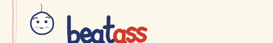

beatass — brand board
every mark at real size · drawn in pen, never typed · character art on the character sheet
1 · the wordmark hand-lettered paths, not a font — beat in ballpoint, ass in red pen


2 · the icon — his head string off the back, dot eyes, the smile survives
3 · email header 560×90 · the red margin hint carries into the email body below

4 · instagram profile — final 1080 square · the red-pen circle, survives the 40px crop
5 · story highlight covers
how it works
the best ones
is this real
6 · post template 1080×1350 — drop a new message onto the taped sheet
anonymous, obviously
you never once said thank you. not once in three years. anyway — this doll took what you had coming.
the message goes here ↑

beatass.com
7 · open graph 1200×630 — what the link looks like in whatsapp / slack
say the thing you'd never say
free · anonymous · he can take it

hit him →
8 · the inks exact values — check them against the site
paper#fbf7ea
paper, lighter#fffdf5
desk#e8e0cc
ruled lines#cddaea
margin rule#e3a8a2
ballpoint blue#26356e
blue, softer#5b6a9c
red pen#cf3a2d
highlighter#ffe873
highlighter pink#ffb9cf
blush @30%#e0507f
pencil#8d8778
files: assets/brand/svg/ (vector) · assets/brand/png/ (email + social + favicons) · no gradients, no glass, no emoji — the only shadow anywhere is a hard sticker offset